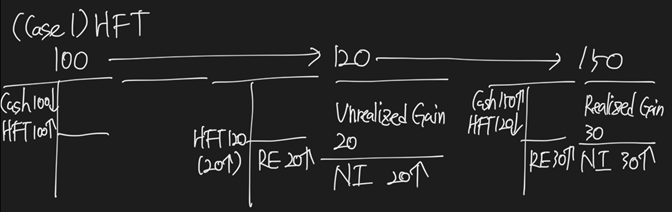
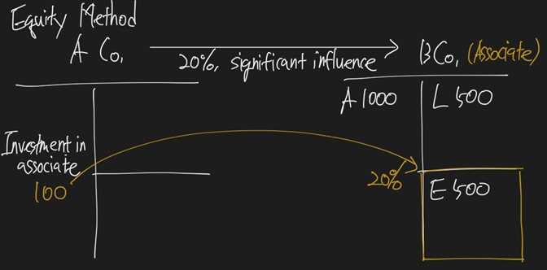
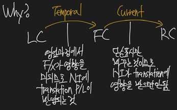

Financial Reporting and Analysis
Level 2 Theme
Intercorporate Investment
Investment in Financial Asset: Passive investment, 대부분 fair value 평가
Investment in Associate: Significant influence (20 ~ 50%), Equity method
Investment in Subsidiary: Control, Consolidation (over 50%)
Employee Benefit: Post-employment benefit – DB type
Multinational operations: Consolidation
Financial Institute Analysis: Bank, Insurance
Evaluation of Reporting Quality
LOS 13.a: Describe the classification, measurement, and disclosure under International Financial Reporting Standards (IFRS) for 1) investments in financial assets, 2) investments in associates, 3) joint ventures, 4) business combinations, and 5) special purpose and variable interest entities.
LOS 13.b: Distinguish between IFRS and US GAAP in the classification, measurement, and disclosure of investments in financial assets, investments in associates, joint ventures, business combinations, and special purpose and variable interest entities.
| Ownership | Degree of Influence | Accounting Treatment |
|---|---|---|
| Less than 20% (investments in financial assets) | No significant influence | Amortized cost (HTM), fair value through OCI (AFS), fair value through profit or loss (HFT) |
| 20% ~ 50% (investments in associates) | Significant influence | Equity method |
| More than 50% (investments in subsidiary) | control | Consolidation by Acquisition method |
Intercorporate investments
Investments in financial assets
- When the investing firm has no significant influence and control over the operations of the investee firm
Investments in associates
- When the investing firm has significant influence over the operations of the investee firm, but not control
Business combination
- When the investing firm has control over the operations of the investee firm
Investments in financial assets
An ownership interest of less than 20% is usually considered a passive investment. cannot significantly influence or control the investee.
US GAAP
Debt securities
Held-for-trading (HFT)
Available-for-sale (AFS)
Held-to-maturity (HTM)
Equity securities
HFT
AFS
Valuation
HFT – Fair value -> Net Income -> Retained Earnings
AFS – Fair value -> OCI -> AOCI
Amortized cost
IFRS9
Cash flow characteristics test (= SPPI test, Solely Payment of Principal and Interests test)
Pass SPPI test – ex) Bond
Business model test
FVTPL (Fair Value Through Profit and Loss) securities
FVOCI (Fair Value through Other Comprehensive Income) securities
Amortized cost securities
Fail to pass SPPI test – ex) Stock
FVTPL securities
- Optionally, FVOCI 선택 가능
- 선택 후 irrevocable
Amortized cost (for debt securities only)
Criteria for amortized cost accounting:
Business model test – debt securities are being held to collect contractual cash flows.
Cash flow characteristic test – the contractual cash flows are either principal, or interest on principal, only.
통과하면, amortized cost로 해당 debt security 평가 – 채권 발행자의 discount, premium, par 발행 후 평가하는 것과 동일함.
Interest income (coupon cash flow adjusted for amortization of premium or discount) is recognized in the income statement, but subsequent changes in fair value are ignored.
Fair value through profit or loss (for debt and equity securities)
두 경우 해당됨
If held for trading
If accounting for those securities at amortized cost results in an accounting mismatch
o Hedge 목적 derivatives는 fair value평가를 하게 되어 있고, hedge 목적물 자산은 amortized cost 평가를 하게 되면 accounting 상 mismatch가 발생한다. 이를 해소하기 위해 둘 다 fair value 평가를 하는 경우
Equity securities that held for trading must be classified as FVPL.
Other equity securities may be classified as either fair value through profit or loss, or fair value through OCI. Once classified, the choice is irrevocable.
Derivatives that are not used for hedging are always carried at FVPL.
If an asset has an embedded derivatives (e.g., CB), the asset as a whole is valued at FVPL.
FVPL securities are reported on the balance sheet at fair value. The changes in fair value, both realized and unrealized, are recognized in the income statement along with any dividend or interest income.
Fair value through OCI (for debt and equity securities)
FVOCI로 분류되면 unrealized gain or loss is reported in OCI. Realized gain or loss, dividend, and interest income are reported in the income statement.
HFT

AFS
HMT
결국 팔고 나면 순익에 반영되는 결과는 다 같다. 그러나, 중간에 평가이익이 변하는 과정을 인식하는 방식이 서로 다름.
Investments in associates
An ownership interests between 20% and 50% is typically a noncontrolling investment; however, the investor can usually significantly influence the investee’s business operations.
Under the equity method, the initial investment is recorded at cost and reported on the balance sheet as a noncurrent asset.
In subsequent periods, the proportionate share of the investee’s earnings increases the investment account on the investor’s balance sheet and is recognized in the investor’s income statement. Dividends received from the investee are treated as a return of capital and thus, reduce the investment amount. Dividends received from the investee are not recognized in the investor’s income statement.
If the investee reports a loss, the investor’s proportionate share of the loss reduces the investment account and also lower earnings in the investor’s income statement. If the investee’s losses reduce the investment account to zero, the investor usually discontinues use of the equity method.
- 손실을 보다가 balance sheet의 investment 자산을 다 까먹으면 더 이상 손실을 인식하지 않음. (유한책임 반영) 다만, 주석에 반영
The equity method is resumed once the proportionate shares of the investee’s earnings exceed the share of losses the were not recognized during the suspension period.
- 여태 본 손실 다 회복하고 나서 balance sheet에 다시 equity method로 복귀
Significant influence
- Board of directors representation
- Involvement in policy making
- Material intercompany transactions
- Interchange of managerial personnel
- Dependence on technology
20% 이하여도 may be possible to have significant influence.
Equity method – Mark to Market approach (X), fair value와는 전혀 무관하다고 생각해도 됨.
Excess of purchase price over book value acquired
At the acquisition date, the excess of the purchase price over the proportionate share of the investee’s book value is allocated to the investee’s identifiable assets and liabilities based on their fair values. Any remainder is considered goodwill.
- 투자자 입장에서 평가된 피투자사 balance sheet의 fair value of asset – fair value of liability를 통해 fair value of equity를 구하고, purchase price – fair value of equity = goodwill의 방식으로 계산
In subsequent periods, the investor recognizes expense based on the excess amounts assigned to the investee’s assets and liabilities.
Under the equity method of accounting, the investor must adjust its balance sheet investment account and the proportionate share of the income reported from the investee for this additional expense.
- 비용도 fair value를 기준으로 계산해야 함. Inventory, PPE의 fair value를 높게 잡아줬다면, 비용도 그에 맞춰서 태우고, 이를 기준으로 산출한 NI의 proportionate shares를 equity method로 income statement에 equity income으로 가져옴.
Impairment of investments in associates
Annually impairment test해야 함.
US GAAP
2 steps
Recovery test
The fair value of the investment < the carrying value of investment
The decline is considered other-than-temporary
Impairment
- Written-down to fair value and a loss is recognized on the income statement
IFRS
1 step
- Loss = the book value of the investment – recoverable amount
- Recoverable amount = max(net selling price, value in use)
Under both IFRS and US GAAP, if there is a recovery in value in the future, the asset cannot be written-up.
Equity Method


Excess of purchase price over book value acquired
Intercorporate transactions
내부거래 미실현이익 제거
Profit from intercorporate transactions must be deferred until the profit is confirmed through use or sale to a third party.
For profit that is unconfirmed (goods have not been used or sold by the investor), the investor must eliminate its proportionate shares of the profit from the equity income of the investee.
- Upstream (investee to investor)
- Downstream (investor to investee)

3rd party에게 inventory 판매되기 전까지 해당 부분은 이익으로 잡으면 안됨.
Analytical issues for investments in associates
Fair MV 변화 없을 경우, the equity method usually results in higher earnings as compared to the accounting methods used for minority passive investments.
The investor simply reports its proportionate share of the investee’s equity in one line on the balance sheet. By ignoring the investee’s debt, leverage is lower. In addition, the margin ratios are higher since the investee’s revenues are ignored.
The proportionate share of the investee’s earnings is recognized in the investor’s income statement, but the earnings may not be available to the investor in the form of cash flow (dividends). That is, the investee’s earnings may be permanently reinvested.
Business combinations
Ownership 50% 이상
Consolidation by acquisition method
- 피투자사의 자산과 부채를 전부 투자자의 balance sheet에 엎는다. 그리고 나서 equity를 계산하고, NCI (non-controlling interest)라는 항목으로 보유하지 않은 지분을 equity에 표시한다.
- Income statement에서도 revenue와 expense를 모두 엎어온다. 그리고 나서 NI산출 전에 minority interest라는 항목으로 보유하지 않은 지분만큼의 earnings를 빼준다.
100% Acquisition
80% Acquisition
Proportionate consolidation
Goodwill
Under the acquisition method, the purchase price is allocated to the identifiable assets and liabilities of the acquired firm on the basis of fair value. Any remainder is reported on the balance sheet as goodwill. Goodwill is said to be an unidentifiable asset that cannot be separated from the business.
- 구매한 금액을 피투자사의 balance sheet에서 pro forma하게 나눠서 allocation하는데, 이 때 identifiable asset에만 allocation을 해야한다. 즉, 피투자사가 goodwill과 같이 unidentifiable asset을 가지고 있으면 해당 부분에는 allocation하지 않는다. Allocation을 다 하고 산출된 fair value of equity를 활용해서 purchase price – fair value of equity = goodwill을 계산한다.
The full goodwill method results in higher total assets and higher total equity than the partial goodwill method. Thus, ROA and ROE will be lower if the full goodwill method is used.
Goodwill is not amortized. Instead, it is tested for impairment at least annually. Impairment occurs when the carrying value exceed the fair value. Because of its inseparability, goodwill is valued at the reporting unit level.
US GAAP
Goodwill is the amount by which the fair value of the subsidiary is greater than the fair value of the subsidiary’s identifiable net assets (full goodwill).
- Goodwill = fair value of 피투자사 - 피투자사의 fair value of equity
- 둘은 엄연히 다르며, fair value of equity는 투자자가 바라보는 피투자사의 fair value of asset and liability를 통해 산출된 값을 의미하며, fair value of 피투자사는 투자자가 지불한 투자사의 equity의 market price로 이해하면 된다. 즉, purchase price.
US GAAP는 full goodwill만 허용한다.
- Full goodwill은 goodwill을 산출할 때 내가 보유하지 않은 지분까지 전부 포함해서 산출하는 개념을 의미한다. 즉, NCI (non-controlling interest)도 fair value 평가를 해주는 개념.
Goodwill impairment potentially involves two steps.
The carrying value of the reporting unit (including the good will) > the fair value of the reporting unit
Impairment loss = difference between the carrying value of the goodwill and the implied fair value of the goodwill.
o The impairment loss is recognized in the income statement as a part of continuing operations.
The implied fair value of the goodwill is calculated in the same manner as goodwill at the acquisition date. That is, the fair value of the reporting unit is allocated to the identifiable assets and liabilities as if they were acquired on the impairment measurement date. Any excess is considered the implied fair value of the goodwill.
IFRS
Goodwill is the excess of the purchase price over the fair value of the acquiring company’s proportion of the acquired company’s identifiable net assets (partial goodwill). However, IFRS permits the use of the full goodwill approach also.
Testing for impairment involves a single step approach.
- The carrying amount of the cash generating unit (where the goodwill is assigned) > the recoverable amount -> impairment loss is recognized.
- Recoverable amount = max(net selling price, value in use)
Impairment of goodwill
Under IFRS and US GAAP, recovery is not allowed.
Bargain purchase
In rare cases, acquisition purchase price is less than the fair value of net assets acquired. Both IFRS and US GAAP requires that the difference between fair value of net assets and purchase price be recognized as a gain in the income statement.
Joint ventures
Investment in associates로 취급.
개정됐으나 시험목적 상 In rare cases, IFRS and US GAAP allow proportionate consolidation as opposed to the equity method. Proportionate consolidation is similar to a business acquisition, except the investor (venturer) only reports the proportionate share of the assets, liabilities, revenues, and expenses of the joint ventures. Since only the proportionate share is reported, no minority owners’ interest is necessary.
Joint venture is an entity in which control is shared by two or more investors.
Special purpose and variable interest entities
A SPE is a legal structure created to isolate certain assets and liabilities of the sponsor. SPEs are often structured such that the sponsor company has control over the SPE’s finances or operating activities while third parties have controlling interest in the SPE’s equity.
Consolidation, a VIE is an entity that has one or both of the following characteristics:
\1. At-risk equity that is insufficient to finance the entity’s activities without additional financial support.
\2. Equity investors that lac any one of the followings:
o Decision making rights
o The obligation to absorb expected losses
o The right to receive expected residual returns
If an SPE is considered a VIE, it must be consolidated by the primary beneficiary. The primary beneficiary is the entity that absorbs the majority of the risks or receives the majority of the rewards.
US GAAP
VIE condition을 마족하면 consolidation
IFRS
실질적인 지배력 (de facto control)이 있으면 consolidation
LOS 13.c: analyze how difference methods used to account for intercorporate investments affect financial statements and ratios.
For important effects on the balance sheet and income statement
All three methods report the same net income.
Equity method and proportionate consolidation report the same equity. Acquisition method equity will be higher by the amount of minority interest.
Assets and liabilities are highest under the acquisition method and lowest under the equity method; proportionate consolidation is in-between.
Revenues and expenses are highest under the acquisition method and lowest under the equity method; proportionate consolidation is in-between.
| Equity method | Proportionate consolidation | Acquisition consolidation | |
|---|---|---|---|
| Net profit margin | higher | In-between | Lower |
| ROE | higher | Same as equity method | Lower |
| ROA | higher | In-between | Lower |
LOS 14.a: Describe the types of post-employment benefit plan and implications for financial reports.
DC (Defined Contribution)
The firm contributes a certain sum each period to the employee’s retirement account. The firm’s contribution can be based on any number of factors including years of service, the employee’s age, compensation, profitability, or even a percentage of the employee’s contribution. In any event, the firm makes no promise to the employee regarding the future value of the plan assets. The investment decisions are left to the employee, who assumes all of the investment risk.
Pension expense is simply equal to the employer’s contribution. There is no future obligation to report on the balance sheet.
회사는 지불한 cash paid = pension expense. 그러므로 no obligation if fully funded.
DB (Defined Benefit)
The firm promises to make periodic payments to the employee after retirement.
Since the employee’s future benefit is defined, the employer assumes the investment risk.
굉장히 많은 assumption이 들어감.
Under US GAAP, Projected Benefit Obligation (PBO)
Under IFRS, Present Value of Defined Benefit Obligation (PV of DBO)
Funded Status of the plan
The difference in the benefit obligation and the plan assets
Funded Status = Plan Asset – PBO
Plan Asset > PBO: Over funded
Plan Asset < PBO: Under Funded
Other post-employment benefits
Health care benefits
Similar to DB pension plan
Future benefit is defined today but is based on a number of unknown variables. The employer must forecast health care costs that are expected once the employee retires.
Pension plans are typically funded at some level, while other post-employment benefit plans are usually unfunded. In the case of an unfunded plan, the employer recognizes expense in the income statement as the benefits are earned; however, the employer’s cash flow is not affected until the benefits are actually paid to the employee.
LOS 14.b: Explain and calculate measures of a defined benefit pension obligation (i.e., present value of the defined benefit obligation and projected benefit obligation) and net pension liability (or asset).
Projected Benefit Obligation (PBO) – US GAAP
Present Value of Defined Benefit Obligation (PVDBO) – IFRS
All future pension benefits earned to date, based on expected future salary increases.
Annual Unit Credit (benefit) = value at retirement / number of years of service
Current Service Cost is the present value of benefits earned by the employees during the current period. Service cost includes an estimate of compensation growth (future salary increase) if the pension benefits are based on future compensation.
Interest cost is the increase in the obligation due to the passage of time. Benefit obligations are discounted obligations; thus, interest accrues on the obligation each period.
Interest cost = pension obligation at the beginning of the period * discount rate
Past (prior) service costs are retroactive benefits awarded to employees when a plan is initiated or amended. Under IFRS, past service costs are expensed immediately. Under US GAAP, past service costs are amortized over the average service life of employees.
Pension policy의 변경 – 소급적용하면 비용을 더 잡아줘야 함
IFRS는 즉시 비용처리.
US GAAP는 AOCI에 Unrecognized Prior Service Cost로 잡아두고service life period동안 amortization.
Changes in actuarial assumptions are the gains and losses that result from changes in variables such as mortality, employee turnover, retirement age, and the discount rate. An actuarial gain will decrease the benefit obligation and an actuarial loss will increase the obligation.
각종 Assumptions 변경으로 인해 생긴 PBO 증감
US GAAP, IFRS 전부 Unrecognized Actuarial Net Gain (Loss)로 AOCI에 기록.
IFRS는 자연상각된다고 가정, AOCI에서 바로 RE로 direct transfer해서 처리. Income statement를 거치지 않음.
US GAAP는 별도로 건드리지 않는 것이 원칙이긴 하지만. Corridor Method를 기준으로 Amortization함. Max(Beginning PBO, Beginning PA) * 10%를 초과하면 Service life period 동안 amortization.
Benefit paid reduce the PBO.
Balance Sheet Effect
Plan Asset
Beginning Balance
+Contribution
+Actual Return on Plan Asset
-Benefit Paid
=Ending Balance
Plan Asset에는 assumption이 없음.
Funded Status
Funded Status = PA - PBO
Funded Status가 overfunded인 경우 net으로 Plan Asset 표시, underfunded인 경우 net으로 PBO로 표시.
Projected Benefit Obligation (Present Value of Defined Benefit Obligation)
PBO = PVDBO
Beginning Balance
+Current Service Cost
+Interest Cost
+-Changes in Actuarial Assumption
+Plan Amendment (Past Service Cost)
-Benefit Paid
=Ending Balance
PBO는 Assumption이 굉장히 많음
AOCI
Unrecognized Actuarial Net Gain (Loss)
- US GAAP, IFRS 모두 사용
- Actual return과 Expected Return의 차이는 Unrecognized Actuarial Net Gain (Loss)로 반영
o Actual return > Expected Return: Gain
o Actual return < Expected Return: Loss
- PBO의 Assumption 변경으로 인한 Gain, Loss
o Salary Rate increase: Loss
o Discount Rate increase: Gain
- US GAAP는 Corridor Method에 기준해서 Max(Beginning PA, Beginning PBO) * 10%를 초과하면 over service period 동안 amortization
- IFRS는 별도로 건드리지 않고, 비용 변경이 있을 때마다 Income statement를 거치지 않고 바로 Retained Earnings에 direct transfer
Unrecognized Prior Service Cost
- IFRS는 사용하지 않는 항목
- US GAAP에선 PBO에 Past Service Cost (Plan Amendment)가 발생하면 여기 기록하고 Amortization over service period.
Income Statement
Pension Expense
Current Service Cost
Interest Cost
- Interest Cost = Beginning PBO * Discount Rate
Expected Return on Plan Asset
Under US GAAP, Expected Return on Plan Asset = Beginning PA * Expected Rate of Return
Under IFRS, Expected Return on Plan Asset = Beginning PA * Discount Rate
Amortization of Unrecognized Actuarial Net Gain (Loss)
Under IFRS, 사용하지 않음
Under US GAAP, by Corridor Method, Amortization of Unrecognized Actuarial Net Gain (Loss) = Excessive Amount of corridor / Average service life
Amortization of Unrecognized Prior Service Cost
Under IFRS, Past Service Cost로 불리며 Retained Earnings로 direct transfer from AOCI
Under US GAAP, Amortized over service life, Amortization of Unrecognized Prior Service Cost = Unrecognized Prior Service Cost / Average Service Time
Los 14.c: Describe the components of a company’s defined benefit pension costs.
TPPC (Total Periodic Pension Cost)
TPPC = employer contributions – (ending funded status – beginning funded status)
TPPC = current service cost + interest cost – actual return on plan assets +/- actuarial losses/gains due to changes in assumptions affecting PBO + prior service cost
Analytical purpose
Type I – Adjustment of Financial statement
Balance Sheet – no adjustment
Income Statement – Pension Expense smoothing adjustment
Not smoothing
TPPC = Current service cost + Income cost – Actual Return +/- Change in Assumption + Plan amendment
TPPC = contribution – (Beginning funded status – Ending funded status)
Reclassification of TPPC
Operating
Non-operating – Interest cost, Actual Return
Cash flow Statement
TPPC만큼은 Pension Fund에 불입했어야 한다.
원래는
CFO (Actual Contribution)
CFI
CFF
Analytical adjustment
CFO ((Actual Contribution) + (TPPC – Actual Contribution) * (1 – t))
CFI
CFF (TPPC – Actual Contribution) * (1 – t)
세금효과 고려해서 TPPC보다 부족한 부분을 차입했다고 가정하고 CF Statement를 조정
TPPC가 Actual Contribution보다 낮으면 CFF에 +로 처리
Current Service Cost
The present value of benefits earned by the employees during the current period. Current service cost is immediately recognized in the income statement.
Interest Cost
Interest cost = Beginning PBO * Discount Rate
Interest Cost is immediately recognized as a component of pension expense.
Expected Return on Plan Assets
The return on the plan assets has no effect on the PBO. Expected return instead of actual return) on plan assets is used for the computation of reported pensions expense. The difference in the expected return and the actual return is combined with other items related to changes in actuarial assumptions into the “actuarial gains and losses” account. The difference in the expected return and the actual return is combined with other items related to changes in actuarial assumptions into the “actuarial gains and losses” account.
Net Interest Expense/Income (Under IFRS)
Net Interest Expense (Income) = Beginning Funded Status * Discount Rate
Under IFRS, the expected rate of return on plan assets is implicitly assumed to be the same as the discount rate used for computation of PBO and a net interest expense/income is reported.
Actuarial Gains and Losses
Actuarial gains/losses as changes in PBO due to changes in actuarial assumptions.
Under IFRS, actuarial gains and losses are not amortized.
Under US GAAP, actuarial gains and losses are amortized using the corridor approach.
Corridor Approach (US GAAP only)
Once the beginning balance of actuarial gains and losses exceed 10% of the greater of the beginning PBO or plan assets, amortization is required. The excess amount over the “corridor” is amortized as a component of periodic pension cost in P&L over the remaining service life of the employees.
Past (prior) Service Cost
When a firm adopts or amends its pension plan, the PBO is immediately increased.
Under US GAAP, it is reported as a part of other comprehensive income and amortized over the remaining service life of the affected employee.
Under IFRS, the past service costs are recognized in periodic pension cost in P&L immediately.
| Component | US GAAP | IFRS |
|---|---|---|
| Current service cost | IS | IS |
| Past service cost | OCI, amortized over service life | IS |
| Interest cost | IS | IS |
| Expected return | IS | IS* |
| Actuarial gains/losses | Amortized portion in IS. Unamortized in OCI. | All in OCI – not amortized (called remeasurements) |
*Under IFRS, the expected rate of return on PA equals the discount rate and net interest expense/income is reported.
Presentation
Under US GAAP, all components of periodic pension cost that are reported in the income statement are aggregated and presented as a single line item.
Under IFRS, components may be presented separately.
Both US GAAP and IFRS require disclosure of total periodic pension cost in the notes to financial statements.
LOS 14.d: Explain and calculate the effect of a defined benefit plan’s assumptions on the defined benefit obligation and periodic pension cost.
The firm discloses three assumptions used in its pension calculation.
Discount rate
Rate of compensation growth
Expected return on plan assets
| Effect on | Increase discount rate | Decrease rate of compensation growth | Increase expected rate of return |
|---|---|---|---|
| Balance sheet liability | Decrease | Decrease | No effect |
| Total periodic pension cost | Decrease* | Decrease | No effect |
| Periodic pension cost in P&L | Decrease* | Decrease | Decrease** |
*For mature plans, a higher discount rate might increase interest costs. In rare cases, interest cost will increase by enough to offset the decrease in the current service cost, and periodic pension cost will increase.
**Under US GAAP only.
Ultimate health care trend rate
The assumptions are similar for other post-employment benefits except the compensation growth rate is replaced by a health care inflation rate. Generally, the presumption is the inflation rate will taper off and eventually become constant. This constant rate is known as the ultimate health care trend rate.
All else equal, firms can reduce the post-employment benefit obligation and periodic expense by decreasing the near term health care inflation rate, by decreasing the ultimate health care trend rate, or by reducing the time needed to reach the ultimate health care trend rate.
Asset allocation
Under US GAAP, the assumed expected rate of return should be consistent with plan’s asset allocation.
Los 14.e: Explain and calculate how adjusting for items of pension and other post-employment benefits that are reported in the notes to the financial statements affects financial statements and ratios.
Gross vs. net pension assets/liabilities
Difference in assumptions used
Difference between IFRS and US GAAP in recognizing total periodic pension cost (in income statement vs. OCI)
Differences due to classification in the income statement
LOS 14.h: Explain how accounting for stock grants and stock options affects financial statements, and the importance of companies’ assumptions in valuing these grants and options.
Stock option


Additional Paid-In Capital에 Stock Option 명목으로 올리고, Income statement에 compensation expense로 태우고, Retained Earnings가 낮아지면서 대차가 맞아지는 과정
실제 exercise되면 CFF를 통해 현금이 들어오고, 대차를 맞춤
Compensation expense is based on the fair value of the options on the grand date based on the number of options that are expected to vest. The vesting date is the first date the employee can actually exercise the options. The compensation expense is allocated in the income statement over the service period.
Recognition of compensation expense will decrease net income and retained earnings; however, paid-in capital is increased by an identical amount. This results in no change to total equity.
Option pricing models
Exercise price
Stock price at the grant date
Expected term
Expected volatility
Expected dividends
Risk-free rate
Lower volatility, a shorter term or a lower risk-free rate, will typically decrease the estimated fair value of the options, decreasing compensation expense. A higher expected dividend yield will also decrease the estimated fair value and compensation expense.
Stock appreciation rights
현금만큼 지급하는 개념이라 Liability에 태우고, 실제 지급할 때 cash가 나가면서 liability가 사라짐
The difference between a stock appreciation right and an option is the form of payment. A stock appreciation award gives the employee the right to receive compensation based on the increase in the price of the firm’s stock over a predetermined amount. With stock appreciation rights, employees have limited downside risk and unlimited upside potential. Also, since no shares are actually issued, there is no dilution to existing shareholders. A disadvantage of stock appreciation rights is that they require current period cash outlay.
Stock grants
Compensation expense for stock granted to an employee is based on the fair value of the stock on the grant date. The compensation expense is allocated over the employee’s service period.
Restricted stock, performance stock
With restricted stock, the transferred stock cannot be sold by the employee until vesting has occurred.
Performance stock is contingent on meeting performance goals, such as accounting earnings or other financial reporting metrics like return on assets or return on equity.
LOS 15.a: Distinguish among presentation (reporting) currency, functional currency, and local currency.’
Local currency
Functional currency – determined by management, is the currency of the primary economic environment in which the entity operates. It is usually the currency in which the entity generates and expends cash. The functional currency can be the local currency or some other currency.
Presentation (reporting) currency – the parent company prepares its financial statements.
LOS 15.b: Describe foreign currency transaction exposure, including accounting for and disclosures about foreign currency transaction gains and losses.
IFRS requires disclosure of the “amount of exchange rate differences recognized in profit or loss” while US GAAP requires disclosure of “the aggregate transaction gain or loss included in determining net income for the period.” Obviously, the comparability of operating margins between entities would be diminished if the compared entities used different methods.
LOS 15.c: Analyze how changes in exchange rates affect the translated sales of the subsidiary and parent company.
LOS 15.d: Compare the current rate method and the temporal method, evaluate how each affects the parent company’s balance sheet and income statement, and determine which method is appropriate in various scenarios.

Remeasurement involves converting the local currency into functional currency using the temporal method.
LC != FC = PC
Translation involves converting the functional currency into the parent’s presentation (reporting) currency using the current rate method. The current rate method is also known as the all-current method.
LC = FC != PC
Current rate method
All income statement accounts are translated at the average rate.
All balance sheet accounts are translated at the current rate except for common stock, which is translated at the historical (actual) rate that applied when the stock was issued.
Dividends are translated at the rate that applied when they were declared.
Translation gain or loss is reported in shareholders’ equity as a part of the cumulative translation adjustment (CTA).
The CTA is simply a “plug” figure that forces the basic accounting equation (A = L + E) to balance.
Monetary assets and liabilities are remeasured using the current exchange rate. Monetary assets and liabilities are fixed in the amount of currency to be received or paid and include: cash, receivables, payables, and short-term and long-term debt.
All other assets and liabilities are considered nonmonetary and are remeasured at the historical (actual) rate. The most common nonmonetary assets include inventory, fixed assets, and intangible assets.
Just life the current rate method, common stock and dividends paid are remeasured at the historical (actual) rate.
Expenses related to nonmonetary assets such as COGS, depreciation expense, and amortization expense are remeasured based on the historical rates prevailing at the time of purchase.
Remeasurement gain or loss is recognized in the income statement. This results in more volatile net income as compared to the current rate method whereby the translation gain or loss is reported in shareholders’ equity.
Recall the ending inventory under FIFO consists of the costs from the most recently purchased goods. Thus, FIFO ending inventory is remeasured based on more recent exchange rates. On the other hand, FIFO COGS consists of costs that are older; thus, the exchange rates used to remeasure COGS are older.
Under LIFO, ending inventory consists of older costs; thus, the inventory is remeasured at older exchange rates. LIFO COGS, however, consists of costs from the most recently purchased goods; thus, COGS is remeasured based on more recent exchange rates.
| Local currency | ||
|---|---|---|
| Exposure | appreciating | depreciating |
| Current rate method | ||
| Net assets | gain | Loss |
| Net liabilities | loss | Gain |
| Temporal method | ||
| Net monetary assets | gain | Loss |
| Net monetary liabilities | loss | Gain |
| Temporal method | Current rate method | |
|---|---|---|
| Monetary assets and liabilities | Current rate | Current rate |
| Nonmonetary assets and liabilities | Historical rate | Current rate |
| Common stock | Historical rate | Historical rate |
| Equity (taken as a whole) | Mixed | Current rate |
| Revenues and SG&A | Average rate | Average rate |
| Cost of goods sold | Historical rate | Average rate |
| Depreciation and amortization | Historical rate | Average rate |
| Net income | Mixed | Average rate |
| Exposure | Net monetary assets | Net assets |
| Exchange rate gain or loss | Income statement | Equity |
Under the temporal method, firms can eliminate their exposure to changing exchange rates by balancing monetary assets and monetary liabilities. When balanced, no gain or loss is recognized.
LOS 15.e: Calculate the translation effect and evaluate the translation of a subsidiary’s balance sheet and income statement into the parent company’s presentation currency.
LOS 15.f: Analyze how the current rate method and the temporal method affect financial statements and ratios.
Pure balance sheet and pure income statement ratios
Pure income statement and pure balance sheet ratios are unaffected by the application of the current rate method.
Mixed balance sheet/income statement ratios
다를 수 있음
하나하나 잘 따져보면서 ratio에서 적용되는 exchange rate 구별해서 계산
LOS 15.g: Analyze how alternative translation methods for subsidiaries operating in hyperinflationary economies affect financial statements and ratios.
Under US GAAP, a hyperinflationary environment is one where cumulative inflation exceeds 100% over a 3-year period. Assuming compounding, an annual inflation rate of more than 26% over three years will result in cumulative inflation over 100%. When hyperinflation is present, use the temporal method.
US GAAP는 단순하게 바로 temporal method 사용
Under IFRS, the IASB does not specifically define hyperinflation; however, cumulative inflation of over 100% in a 3-year period is one indication that hyperinflation exists.
IFRS는 current rate method를 그대로 사용하는데, 사전에 price level adjustment를 통해 net purchasing power gain을 plug-in으로 income statement에 끼워넣음.
LOS 15.h: Describe how multinational operations affect a company’s effective tax rate.
Effective tax rate is the tax expense in the income statement divided by pretax profit.
Statutory tax rate is provided by the tax code of the home country.
Changes in effective tax rate on account of foreign operations can be due to:
- Changes in the mix of profits from different countries (with varying tax rates)
- Changes in the tax rates
- Permanent difference
LOS 15.i: Explain how changes in the components of sales affect the sustainability of sales growth.
LOS 15.j: Analyze how currency fluctuations potentially affect financial results, given a company’s countries of operation.
LOS 16.a: Describe how financial institutions differ from other companies.
Financial institutions differ from other companies as follows:
Systemic importance – the contagion effect
Regulated
Assets – the assets of financial institutions tend to be financial assets such as loans and securities that are usually reported at fair value.
LOS 16.b: Describe key aspects of financial regulations of financial institutions.
Basel III
The three pillars of the Basel III framework are the maintenance of minimum levels of capital, liquidity, and stable funding.
- Minimum required capital for a bank is based on the risk of the bank’s assets. The riskier a bank’s assets are, the higher its required capital.
- Basel III specifies that a bank should hold enough liquid assets to meet demands under a 30-day liquidity stress scenario.
- The Basel III framework requires stable funding relative to a bank’s liquidity needs over a one-year time horizon. Stability in funding is proportional to the tenor of the bank’s deposits; longer-term deposits are more stable than shorter-term deposits. Stability also depends on the type of deposit.
Global organizations
Financial Stability Board
International Association of Deposit Insurers – seeks to improve the effectiveness of deposit insurance systems.
International Organization of Securities Commissions (IOSCO) – seeks to promote fair and efficient security markets.
International Association of Insurance Supervisors (IAIS) – seeks to improve supervision of the insurance industry.
LOS 16.c: Explain the CAMELS (capital adequacy, asset quality, management, earnings, liquidity, and sensitivity) approach to analyzing a bank, including key ratios and its limitations.
Capital Adequacy

Capital adequacy is based on risk-weighted assets (RWA); more risky assets require a higher level of capital.
Basel III defines a bank’s capital in a tiered, hierarchical approach:
Tier 1 capital:
Common equity Tier 1 capital (the most important component): Common stock, additional paid-in capital, retained earnings and OCI less intangibles and deferred tax assets.
Other Tier 1 capital: subordinated instruments with no specified maturity and no contractual dividends (e.g., preferred stock with discretionary dividends).
Tier 2 capital: subordinated instruments with original (i.e., when issued) maturity of more than five years.
Individual jurisdictions specify the minimum capital requirements. Basel III guidelines specify a minimum Common Equity Tier 1 capital of 4.5% of RWA, minimum total Tier 1 capital of 6% of RWA, and minimum total capital of 8% of RWA.
Asset Quality
Evaluation of asset quality includes analysis of current and potential credit risk associated with the bank’s assets.
Bank assets include loans (the largest component) and investments in securities. While loans are generally carried on the balance sheet at amortized cost (net of allowances), the accounting treatment for investments in securities differs between US GAAP and IFRS.
Credit Risk Analysis
Credit risk is present in debt securities that the bank invests in, loans the bank makes, as well as in the bank’s off-balance-sheet liabilities. Analyzing the credit quality of a bank’s assets can provide an analyst key insights into the bank’s solvency and future profitability.
Key loans
- Past due but not yet impaired
- Impaired
- Seriously impaired
Loan Loss Provisions
The credit quality of loans and loss provisions are critical in evaluating the bank’s financial position and performance. Allowance for loan losses is a contra asset account to loans and is the result of provision for loan losses, an expense subject to management discretion. Analysts need to evaluate the bank’s policy of setting aside adequate provisions relative to actual loan performance. Actual losses (net of recoveries) are then written off against these provisions.
Ratios
Ratio of allowance for loan losses to nonperforming loans.
Ratio of allowance for loan losses to net loan charge-offs.
Ratio of provision for loan losses to net loan charge-offs.
Management capabilities
Earnings
Earnings are considered high quality if they are adequate as well as sustainable. Ideally, the trend in earnings should be positive and the underlying accounting estimates should be unbiased. Finally, earnings should ideally be derived from recurring sources.
A major source of earnings of a bank is from investment in securities. Estimates used in the valuation of these securities may lead to biased earnings.
Level 1 inputs are quoted market prices of identical assets.
Level 2 inputs are observable but not quoted prices of identical assets.
Level 3 inputs are non-observable and hence subjective.
In practice, banks often use the fair value hierarchy to label their assets or to label their valuation methodology.
For a typical bank, major sources of earnings are (1) net interest income, (2) service income, and (3) trading income. Of these, trading income is the most volatile year-to-year, and, hence, on a relative basis, banks with proportionally higher net interest income and service income would have more sustainable earnings.
Liquidity Position
Liquidity coverage ratio (LCR)
LCR = highly liquid assets / expected cash outflows
Highly liquid assets are those that are easily convertiable into cash, while expected cash flows are the estimated on-month liquidity needs in a stress scenario. The standards recommend a minimum LCR of 100%.
Net stable funding ratio (NSFR)
NSFR = available stable funding / required stable funding
Available stable funding is a function of the composition and maturity distribution of a bank’s funding sources. Required stable funding is a function of the composition and maturity distribution of the bank’s asset base.
| Funding Component | ASF Factor | |
|---|---|---|
| Regulatory capital minus Tier 2 instruments maturing in a year | 100% | Equity |
| Other capital instruments and liabilities with maturity > 1 year | 95% | |
| Less-stable demand deposits and term deposits (maturity < 1 year) from retail and small business customers | 90% | |
| Funding from nonfinancial corporates (maturity < 1 year), operational deposits, funding from sovereigns, public sector (maturity < 1 year), multilateral and national development banks | 50% | |
| All other liabilities | 0% | Short-term |
NSFR relates the liquidity needs of a bank’s assets to the liquidity provided by the bank’s liabilities. Longer-dated liabilities are considered more stable and hence would be suitable to fund assets with longer maturities. Deposits from retail and small business clients are considered more stable than deposits from corporate clients. The standards recommend a minimum NSFR of 100%.
Other liquidity monitoring metrics recommended by Basel III include concentration of funding and maturity mismatch.
Sensitivity to Market Risk
The most critical of various market risks is interest rate risk. A bank’s interest rate risk is the result of differences in maturity, rates, and repricing frequency between the bank’s assets and its liabilities.
The impact of market risk can be captured by value at risk (VaR).
Other Factors
- Government support
- Government ownership
- Bank missions
- Culture
LOS 16.e: Analyze a bank based on financial statements and other factors.
LOS 16.f: Describe key ratios and other factors to consider in analyzing an insurance company.
Insurance company revenues include premium income and income on float.
Property and casualty (P&C) insurers differ from life and health (L&H) insurers in terms of variability of claims and contract duration. Claims form P&V insurers tend to be lumpier as compared to relatively stable and predictable claims for L&H insurers. Contract duration is much higher for L&H insurers relative to that of P&C insurers. Regulatory requirements that focus on solvency of insurance companies often result in different reporting standards compared to IFRS or US GAAP.
P&C Insurance Companies
Premium income is usually the highest source of income for a P&C insurer. Keys to the profitability of an insurer are prudence in underwriting, pricing of adequate premiums for bearing risk, and diversification of risk. To diversify their risks, insurers often reinsure some risks. The policy period is often very short, with premiums received at the beginning of the period and invested during the float period. Claim events are clearly defined but may take a long time to emerge.
Property insurance covers specific assets against loss due to insured events. Casualty insurance protects against a legal liability due to the occurrence of a covered event. Sometimes a poly, known as multiple peril policy, may cover both property and casualty losses occurring during a covered event.
P&C Profitability
P&C margins are cyclical. During periods of heightened competition, price cutting to obtain new business leads to slim or negative margins (soft pricing period). This soft pricing period leads to losses and a shrinking capital base for many insurers, who either leave the industry or stop underwriting new policies. The resulting reduction in competition leads to a healthier pricing environment (hard pricing period), which in turn results in fatter margins. Higher margins during the hard pricing period attract new competition, perpetuating the cycle.
Major expenses for P&C insurers include claims expense and the expense of obtaining new policy business. The cost of writing new policies depends on whether the insurer uses a direct-to-customer model (in which case it would bear the fixed cost of staffing) or the agency model (in which case it would pay variable commissions). Soft or hard pricing is driven by the industry’s combined ratio (total insurance expenses / net premiums earned). When the ratio is low (high), it is a hard (soft) market.
For a single insurer, a combined ratio in excess of 100% indicates an underwriting loss.
Underwriting loss ratio (loss and loss adjustment expense ratio) = (claims paid + delta of loss reverse) / net premium earned
Expense ratio (underwriting expense ratio) = underwriting expenses including commissions / net premium written
The underwriting loss ratio measures the relative efficiency of the company’s underwriting standards (whether the policies are priced appropriately relative to risks borne), while the expense ratio measures the efficiency of the company’s operations.
For reporting purposes, sometimes insurers use US GAAP, which calls for net premium earned as the denominator for both ratios.
The loss reverse is an estimated value of unpaid claims (based on estimated losses incurred during the reporting period). Subject to management discretion in measurement, the loss reserve is a highly material amount. Insurers revise their estimate of the loss reserve as more information becomes available. Downward revisions indicate that the company was conservative in estimating their losses in the first place. Upward revisions indicate aggressive profit booking, a warning sign for analysts.
Other profitability ratios
Loss and loss adjustment expense ratio
Loss and loss adjustment expense ratio = (loss expense + loss adjustment expense) / net premiums earned
Loss and loss adjustment expense ratio measures the relative success in estimation of risks insured (lower is more successful).
Combined ratio after dividends (CRAD)
CRAD measures total efficiency and is more comprehensive than the combined ratio.
CRAD = combined ratio + dividends to policyholders ratio
Investment returns
Total investment return ratio = total investment income / invested assets
Total investment return ratio is used to evaluate the performance of an insurer’s investment operations.
Liquidity
Liquidity is an important consideration for P&C insurers as they stand ready to meet their claim obligations. One way to gauge the liquidity of the investment portfolio is to look at their fair value hierarchy reporting.
Capitalization
There are no global risk-based capital requirement standards for insurers. Regionally, the EU has adopted the Solvency II standards, while NAIC in the United States has specified minimum capital levels based on size and risk (including asset, credit. Liquidity, underwriting, and other relevant risks).
L&H Insurance companies
L&H insurers derive their revenue primarily from premiums, while investment income is the secondary source.
Revenue diversification
Earnings characteristics
Investment returns
Liquidity
Capitalization
LOS 17.a: Demonstrate the use of a conceptual framework for assessing the quality of a company’s financial reports.
Reporting quality / Earnings quality로 나뉨
Reporting Quality는 GAAP compliant & low bias가 중요
Earning quality는 Reporting Quality가 충족되었다는 전제 하에 high level & sustainable이 중요
High-quality reporting provides decision-useful information; information that is accurate as well as relevant. Low-quality reporting impedes assessment while high-quality reporting enables it.
The term high-quality earnings refers to a high level of earnings as well as sustainability of earnings. Good economic performance and sustainable earnings are considered high quality. Earnings quality is also referred to as result quality.
One cannot have both low-quality reporting and high-quality earnings; high-quality earnings assume high-quality reporting. However, one could have a situation in which the company has high quality reporting but low-quality earnings.
Financial reports quality (high to low)
GAAP compliant and decision-useful, high-quality earnings
GAAP compliant and decision-useful, low-quality earnings
GAAP compliant but not decision-useful, (biased choices)
Non-compliant accounting
Fraudulent accounting
LOS 17.b: Explain potential problems that affect the quality of financial reports.
Measurement and timing issues
Aggressive revenue recognition / conservative revenue recognition
Classification issues
Misclassification
Removing accounts receivable by selling or transferring receivables to a related entity or by treating them as long-term receivables.
Reclassifying non-core revenues as revenues from core continuing operations
Reclassifying expenses as non-operating
Treating investing cash flows as operating cash flows
Biased accounting
Mechanisms to misstate profitability
- Aggressive revenue recognition, including channel stuffing (aggressively selling products to distributors on generous terms such as lax return policies), bill and hold sales (where economic title to goods may not truly pass to customers), and outright fake sales.
- Lessor use of finance lease classification – sales-type lease
- Classifying non-operating revenue/income as operating, and operating expenses as non-operating.
- Channeling gains through net income and losses through OCI.
Warnings signs of misstated profitability
- Revenue growth higher than peers’
- Receivables growth higher than revenue growth
- High rate of customer returns
- High proportion of revenue is received in final quarter
- Unexplained boost to operating margin
- Operating cash flow lower than operating income
- Inconsistency in operating versus non-operating classification over time
- Aggressive accounting assumptions – high estimated useful lives
- Executive compensation largely tied to financial results.
Mechanisms to misstate assets/liabilities
- Choosing inappropriate models and/or model inputs and thus affecting estimated values of financial statement elements – estimated useful lives for long-lived assets
- Reclassification from current to non-current
- Over-or understating allowances and reserves
- Understating identifiable assets (and overstating goodwill) in acquisition method accounting for business combinations
Warnings signs of misstated assets/liabilities
- Inconsistency in model inputs for valuation of assets versus valuation of liabilities
- Typical current assets being classified as non-current
- Allowances and reserves differ from those of peers and fluctuate over time
- High goodwill relative to total assets
- Use of special purpose entities
- Large fluctuations in deferred tax assets/liabilities
- Large off-balance-sheet liabilities
Mechanisms to overstate operating cash flows
- Managing activities to affect cash flow from operations – working capital management, stretching payables
- Misclassifying investing cash flow as cash flow from operations
Warnings signs of overstated operating cash flows
- Increase in payables combined with decreases in inventory and receivables.
- Capitalized expenditures which flow through investing activities.
- Increases in bank overdraft
Business combinations-acquisition method accounting
GAAP accounting but not economic reality
LOS 17.c: Describe how to evaluate the quality of a company’s financial reports.
LOS 17.d: Evaluate the quality of a company’s financial reports.
Understand the company, its industry, and the accounting principles it uses and why such principles are appropriate.
Understand management including the terms of their compensation. Also evaluate any insider trades and related party transactions.
Identify material areas of accounting that are vulnerable to subjectivity.
Make cross-sectional and time series comparisons of financial statements and important ratios.
Check for warning signs as discussed previously.
For firms in multiple lines of business or for multinational firms, check for shifting of profits or revenues to a specific part of the business that the firm wants to highlight. This is particularly a concern when a specific segment shows dramatic improvement while the consolidated financials show negative or zero growth.
Use quantitative tools to evaluate the likelihood of misreporting.
Quantitative tools
The Beneish Model
The Beneish model is a probit regression model that estimates the probability of earnings manipulation using eight dependent variables. The M-score determines the probability of earnings manipulation – higher values indicate high probabilities.
M-score > -1.78 indicates a higher-than-acceptable probability of earnings manipulation.
- DSRI (Days sales receivable index) – ratio of days’ sales receivables in year t relative to year t – 1. A large increase in DSRI could be indicative of revenue inflation.
- GMI (Gross margin index) – ratio of gross margin in year t – 1 to that in year t. a firm with declining margins is more likely to manipulate earnings.
- AQI (Asset quality index) – ratio of non-current assets other than plant, property, and equipment to total assets in year t relative to year t – 1. Increases in AQI could indicate excessive capitalization of expenses.
- SGI (Sales growth index) – ratio of sales in year t relative to year t – 1. While not a measure of manipulation by itself, growth companies tend to find themselves under pressure to manipulate earnings to meet ongoing expectations.
- DEPI (Depreciation index) – ratio of depreciation rate in year t – 1 to the corresponding rate in year t. the depreciation rate is depreciation expense divided by depreciation plus PPE. A DEPI greater than 1 suggests that assets are being depreciated at a slower rate in order to manipulate earnings.
- SGAI (Sales, general and administrative expenses index) – ratio of SGA expenses (as a % of sales) in year t relative to year t – 1. Increases in SGA expenses might predispose companies to manipulate.
- Accruals = (income before extraordinary items – cash flow from operations) / total assets
- LEVI (Leverage index) – ratio of total debt to total assets in year t relative to year t – 1.
The Beneish model relies on accounting data, which may not reflect economic reality. Additionally, as managers become aware of the use of specific quantitative tools, they may begin to game the measures used.
Altman Model
Altman’s Z-score model was developed to assess the probability that a firm will file for bankruptcy.
- Net working capital as a proportion of total assets
- Retained earnings as a proportion of total assets
- Operating profit as a proportion of total assets
- Market value of equity relative to book value of liabilities
- Sales relative to total assets
Each variable is positively related to the Z-scores, and a higher Z-score is better (less likelihood of bankruptcy).
LOS 17.f: Describe indicators of earnings quality.
Sustainable – high-quality earnings tend to persist in the future.
Adequate – high-quality earnings cover the company’s cost of capital.
High-quality earnings assume high-quality reporting.
LOS 17.e: Describe the concept of sustainable (persistent) earnings.
Sustainable or persistent earnings are earnings that are expected to recur in the future.
Accruals
Accrual accounting requires considerable subjectivity because of the many estimates and judgments involved with assigning revenues and expenses to appropriate periods. Due to this subjectivity in revenue and expense recognition, disaggregating income into its two major components, cash and accruals, further enhances its quality as an input for forecasting future earnings. The accrual component of income is less persistent than the cash component.
LOS 17.g: Explain mean reversion in earnings and how the accruals component of earnings affects the speed of mean reversion.
When examining net income, analysts should be aware that earnings at extreme levels tend to revert back to normal levels over time. This phenomenon is known as mean reversion. Because of mean reversion, analysts should not expect extreme earnings to continue indefinitely. When earnings are largely comprised of accruals, mean reversion will occur faster.
LOS 17.h: Evaluate the earnings quality of a company.
Revenue recognition issues
Revenues generated via deliberate channel-stuffing or as a result of bill-and-hold arrangements should be considered spurious and inferior.
Cash versus accruals
Compare financials with physical data provided by the company
Evaluate revenue trends and compare with peers
Check for related party transactions
Expense capitalization
One way to boost reported performance is to under-report an operating expense by capitalizing it.
LOS 17.i: Describe indicators of cash flow quality.
While cash flows are less amenable to manipulation management can affect cash flows via strategic decisions (timing issues).
LOS 17.j: Evaluate the cash flow quality of a company.
Analysts should be aware that accounting standards afford some flexibility in the treatment of certain items in the statement of cash flows.
LOS 17.k: Describe indicators of balance sheet quality.
LOS 17.l: Evaluate the balance sheet quality of a company.
Completeness
In the case of intercorporate investments, the equity method of accounting allows one-line consolidation for investments in associates. The equity method of accounting would result in certain profitability ratios being higher than under the acquisition method.
Unbiased measurement
- Value of the pension liability (based on several actuarial assumptions)
- Value of investment in debt or equity of other companies for which a market value is not readily available.
- Goodwill value (subjectivity in impairment testing)
- Inventory valuation (subjectivity in testing for impairment)
- Impairment of PP&E and other assets
LOS 17.m: Describe sources of information about risk.
- Financial statements
- Auditor’s report
- Notes to financial statements
- Management discussion and analysis (MD&A)
- SEC Form ‘NT’
- Financial press
LOS 18.a: Demonstrate the use of framework for the analysis of financial statements, given a particular problem, question, or purpose (e.g., valuing equity based on comparables, critiquing a credit rating, obtaining a comprehensive picture of financial leverage, evaluating the perspectives given in management’s discussion of financial results).
Establish the objectives
o Input
§ Perspective of the analyst
§ Needs or concerns communicated by the client or supervisor
§ Institutional guidelines
o Output
§ Purpose statement
§ Specific questions to be answered
§ Nature and content of the final report
§ Timetable and resource budget
Collect data
o Input
§ Financial statements
§ Communication with management, suppliers, customers, and competitors
o Output
§ Organized financial information
Process data
o Input
§ Data from step 2
o Output
§ Adjusted financial statements
§ Common-size statements
§ Ratios
§ Forecasts
Analyze data
o Input
§ Data from steps 2 and 3
o Output
§ Results
Develop and communicate conclusions
o Input
§ Results from analysis
§ Published report guidelines
o Output
§ Report answering questions posed in step 1
§ recommendations
Follow up
o Input
§ Periodically updated information
o Output
§ Updated analysis and recommendations
The analysis focuses on the following:
- Sources of earnings and return on equity
- Asset base
- Capital structure
- Capital allocation decisions
- Earnings quality and cash flow analysis
- Market value decomposition
- Anticipating changes in accounting standards
LOS 18.b: Identify financial reporting choices and biases that affect the quality and comparability of companies’ financial statements and explain how such biases may affect financial decisions.
LOS 18.c: Evaluate the quality of a company’s financial data and recommend appropriate adjustments to improve quality and comparability with similar companies, including adjustments for differences in accounting standards, methods, and assumptions.
Sources of earnings and return on equity
ROE = Tax Burden * Interest Burden * EBIT margin * Total Asset Turnover * Financial Leverage
We must also consider the firm’s sources of income and whether the income is generated internally from operations or externally.
Eliminating the equity income from the investor’s earnings permits analysis of the investor’s performance resulting exclusively from its own asset base. Since, under the equity method, the firm’s investment is reported as a balance sheet asset, total assets should be reduced by the carrying value of investment.
Another common adjustment made by analysts is to remove the effects of any unusual items (e.g., provisions for restructuring and litigation, goodwill impairment, etc.) from reported operating earnings (EBIT) before computing the EBIT margin and the tax burden ratios.
Asset base
Analysis of the asset base requires an examination of changes in the composition of balance sheet assets over time.
Since goodwill is no longer amortized through the income statement, we must consider the possibility of losses in the future if goodwill is determined to have been impaired.
Capital structure
A firm’s capital structure must be able to support management’s strategic objectives as well as to allow the firm to honor its future obligations.
Capital allocation decisions
Consolidated financial statements can hide the individual characteristics of dissimilar subsidiaries. As a result, firms are required to disaggregate financial information by segments to assists users.
Accrual-based measures such as EBIT may not be a good indicator of an entity’s ability to generate cash flow. We would rather evaluate segmental capital allocation decisions based on cash flows generated by each segment. However, segmental cash flow data is generally not reported. We can, however, approximate cash flow as EBIT plus depreciation and amortization.